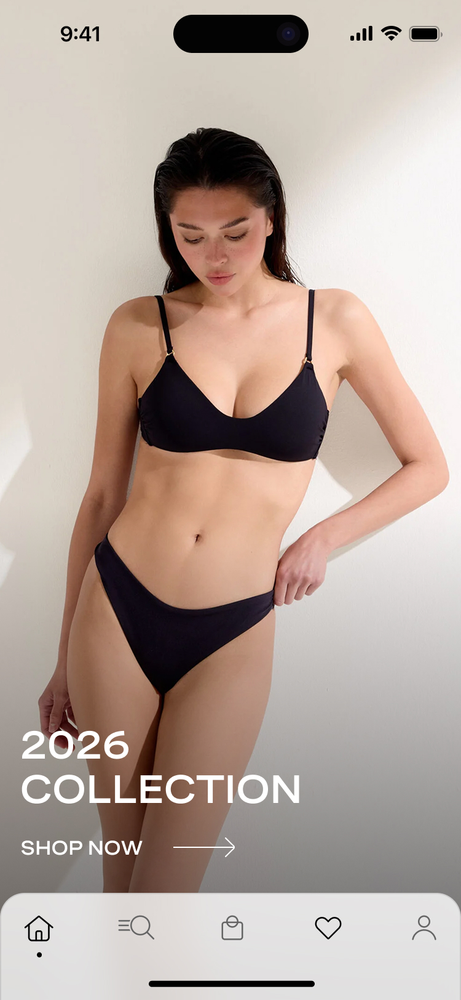
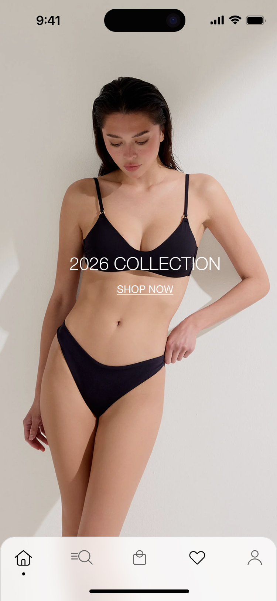
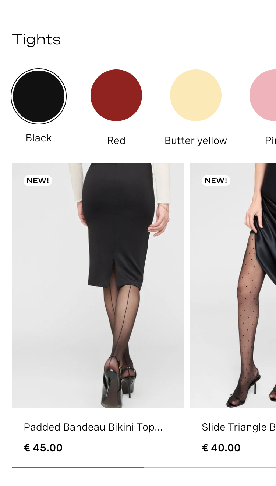
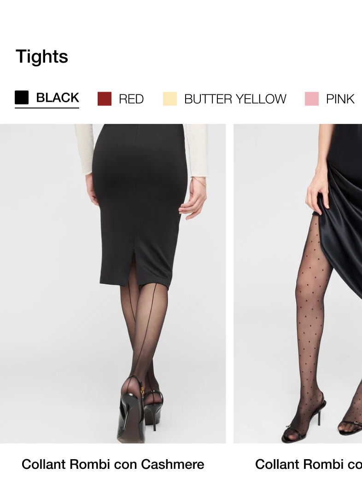
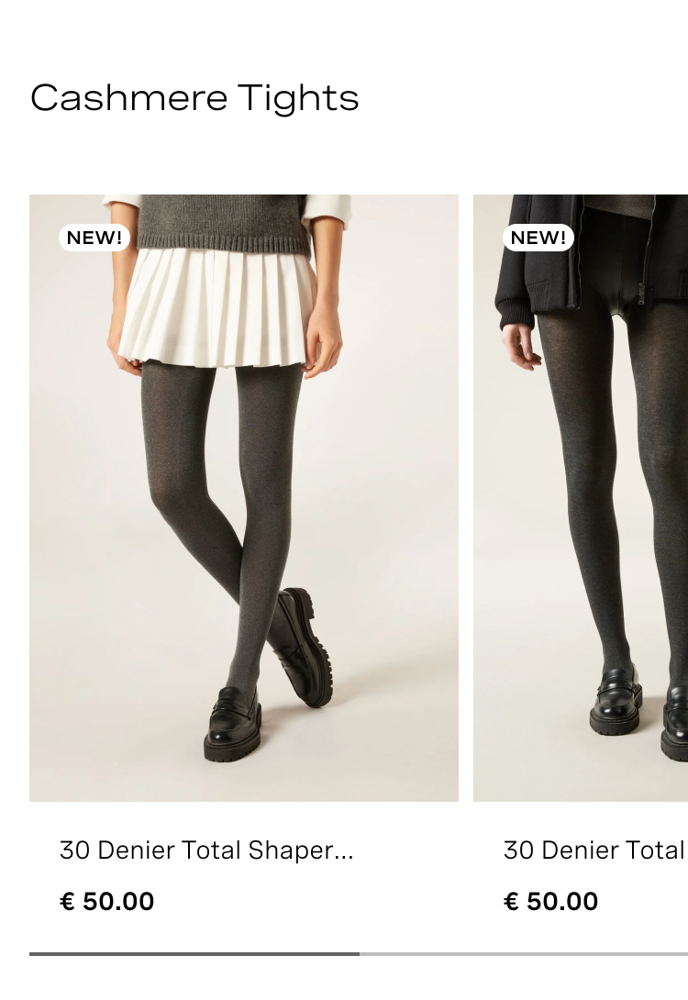
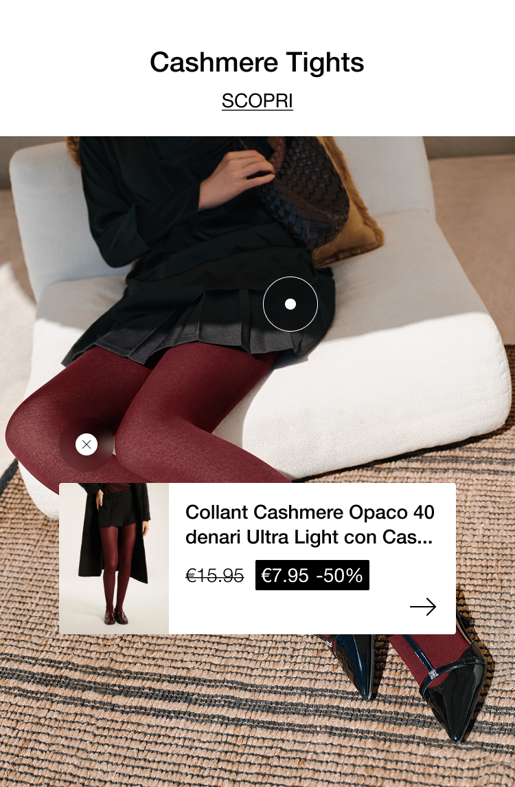

← Back to Work
Calzedonia.com
Web Design · UI · E-commerce
Calzedonia.com
Redesign
Redesigning a global fashion e-commerce to improve conversion rate, visual identity, and user experience.
Redesigning a global fashion e-commerce to improve conversion rate, visual identity, and user experience.
Calzedonia is a global fashion brand, with a strong physical retail presence and a growing e-commerce. The existing website had an outdated visual language, fragmented navigation, and navigation flows that created unnecessary friction.
The redesign was a strategic response, not just a visual refresh, but a structured effort to close the gap between Calzedonia's brand positioning and its digital experience.
The existing palette mixed warm pinks, greens, and teals, a combination that felt uncoordinated and didn't support the elevated brand positioning Calzedonia is moving towards.
Before
The new palette is a step towards an elegant neutral culture, warm whites, stone greys, near-blacks. It lets the photography and product do the talking, instead of competing with the UI chrome.
A set of warm accent tones (White Chocolate, Champagne, Dust Storm) was added for editorial modules.
After — Neutral scale
After — Nude scale
The existing display typeface (Spezia Extended) required a paid licence, introduced inconsistencies across devices, and carried a slightly editorial-heavy tone that was working against clarity. We moved to Helvetica Neue.
Expressive, editorial, but inconsistent rendering across browsers, licence costs, and reduced readability at small sizes.
Clean, universally rendered, zero licence costs. Improves readability and accessibility, and gives the brand a more modern, competitive feel.
The homepage was redesigned introducing the new colour system, typography, and an editorial refresh of the homepage modules.
The new modules were designed to make product navigation and discovery easier and more intuitive. They put more focus on product images, making it easier for users to see the products and their details. New features, such as price and text hotspots on images, were introduced, along with an interactive product filmstrip that lets users filter products by color directly from the homepage.
The price and discount UI was also improved to make this information clearer and easier to notice. Overall, the UI and visual design were simplified to create a cleaner, more elegant, and engaging experience. Data already shows that the new version is more engaging than the previous one.

Before
After
Before
After
Before
AfterThe redesign was built around a measurable goal: improving user engagement and overall improving conversion rate on a site that was underperforming against retail market benchmarks. The design decisions, like palette, typography, layout hierarchy, editorial photography, were all oriented towards reducing friction and building a modern and elegant visual identity.
The redesign is structured in waves to allow for testing and iteration between releases, rather than a single big-bang launch. Every element was tested, improved and re-tested in the month before the launch, in order to reduce bugs and errors.
Photography refresh and full visual system definition: palette, typography, component language.
New homepage modules, editorial layout, full colour system rollout. Live on calzedonia.com.
Other pages of the website and app will also be redesigned and restructured to improve the overall digital experience.
This project reminded me that design is rarely a solo process. Working with different teams and specialists, each with their own goals, expertise, and perspective, pushed me to communicate ideas clearly, challenge decisions, and find the right balance between different needs.
It also strengthened the way I approach design at scale. Balancing creativity with data, business goals, user needs, and technical constraints meant looking beyond individual screens and thinking about the experience as a whole. It was a valuable reminder that the strongest design outcomes often come from collaboration, iteration, and being open to different perspectives.